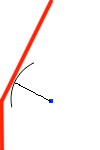

Like any other 10-year-old, Little Billy loves to eat candy. However, every day after school, his parents give him a specific path he has to take home to make sure he doesn’t go to the candy store. Billy is given a number of points, starting at his school and ending at home, and he walks directly from the 1st, to the 2nd, then to the 3rd, and so on. Even though he isn’t allowed to go to the store, Little Billy wants to know the closest distance he gets to the store on his way home. Being his only imaginary friend who knows how to program, help him by computing this distance.
The input file DATA3.txt will contain 5 sets of input. The first line of each set contains a number 1 <= N <= 10, the number of points on Little Billy's walk back home. The next N lines each contain two numbers separated by a single space, -1000 <= X, Y <= 1000, the coordinates of points for the walk. The last line of each set contains two numbers separated by a single space, -1000 <= Cx, Cy <= 1000, the location of the forbidden candy store.
The output file OUT3.txt will contain 5 lines of output, the closest distance to the candy store, from anywhere along the walk. Round to 2 decimal places. Print trailing zeros. E.g. 1.00
3 0 0 0 1 1 3 1 1
0.89
